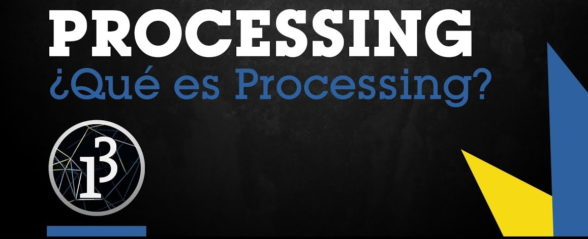

Processing, programación al alcance de todos

¿Qué es Processing?
Processing es un lenguaje de programación y entorno de desarrollo integrado de código abierto basado en Java, de fácil utilización, y que sirve como medio para la enseñanza y producción de proyectos multimedia e interactivos de diseño digital.
¿Su objetivo?
Uno de los objetivos declarados de Processing es el de actuar como herramienta para que artistas, diseñadores visuales y miembros de otras comunidades ajenos al lenguaje de la programación, aprendieran las bases de la misma a través de una muestra gráfica instantánea y visual de la información.
¿Dibujar con código?
Una de las primeras cosas que podemos hacer para comenzar a meternos poco a poco en el mundo de processing e ir conociendo sus lineas de código, es dibujar. Si, así como leen. El siguiente es un ejemplo de como con un par de lineas de codigo básico podemos hacerlo y poco a poco ir interiorizando la manera en que trabaja este lenguaje.
Tp0 de Ramirez Ezequiel Sebastian (Zeqqe) - Tecnología Multimedial - Diseño multimedial
¿Cómo fue realizado?
Para el código no fueron utilizados más que unos rectángulos, líneas y círculos. Cosas simples que puedes y te conviene memorizar en un primcipio antes de meterte en otros temas quizas más complejos. Te dejo aquí el link de github dónde puedes ver el código completo y porque no, probar de modificarlo y realizar tu propio autorretrato.
link al proytecto en GithubCréditos e ilusiones ópticas
¿Y si ya domino el dibujo que sigue? Bueno, ¿qué tal si nos empezamos a meter de a poco en cuestiones más complejas? Una de las siguientes cosas que puedes hacer es aprender a realizar de a poco loops e interacciones para esto te muestro dos de los proyectos que realicé para Tecnología Multimedial I de la carrera de Diseño multimedial
Créditos
La creación de creditos puede ser util para cualquier proyecto y, de hecho, más abajo mostraré unos proyectos básicos de videojuegos para lo cual podría sernos muy util tenerlo ya sabido junto con la realización de botones
link al proytecto en GithubIlusión óptica
Los loops son repeticiones, en lugar de escribir tantas lineas de codigo hay cuestiones que pueden resolverse facilmente con un ciclo for en processing, para practicar esto las ilusiones opticas son de mucha ayuda. ¿Qué opinas?¿Acaso se esta moviendo algo? Pues no importa si no puedes responder a esto, lo que si importa es que sepas que esto fue realizado con unas pocas lineas de código gracias al ciclo for. Ahora es tu turno, intentalo, te dejo el link a github para que veas el código
link al proytecto en Github¿Listo para los juegos?
En processing se pueden realizar juegos, si. Junto con una amiga realizamos dos juegos la diferencia entre ambos, más allá de ser distintos en cunato al modo de jugar, es que en uno de ellos utilizamos ciclo for, arreglos y funciones, mientras que en el otro utilizamos además la programación orientada a objetos. Lovecat y Lovecat2 son proyectos que al lograr hacerlos jugables nos generó una gran alegría. Te dejo los links a github y las imagenes de ambos para que puedas verlos y animarte a hacer los tuyos.
Lovecat
Lovecat es un juego donde manejamos a Comelón. Nuestro protagonista fue alejado de su hermosa bimbo y hay que ayudarlo a evadir las plataformas que caen hasta lograr reencontrarse con ella.
link al proytecto en Github
Lovecat2
Lovecat2 es un juego donde volvemos a ponernos en la piel de Comelón que decide conseguir pescados para su hermosa Bimbo. Sin embargo, no todos los peces de ese estanque son lo suficientemente buenos para ella por lo que deberas pecar solo al mejor y más dificil
link al proytecto en Github¿Programación orientada a objetos?
Más arriba mencione esto, pero ¿que es la POO (Programación orientada a objetos)? Es un paradigma de la programación, una manera de programar específica, donde se organiza el código en unidades denominadas clases, de las cuales se crean objetos que se relacionan entre sí para conseguir los objetivos de las aplicaciones. Podemos entender la programación Orientada a objetos (POO) como una forma especial de programar, más cercana a como expresaríamos las cosas en la vida real que otros tipos de programación, que permite diseñar mejor las aplicaciones, llegando a mayores cotas de complejidad, sin que el código se vuelva inmanejable.
Al programar orientado a objetos tenemos que aprender a pensar cómo resolver los problemas de una manera distinta a como se realizaba anteriormente, en la programación estructurada. Ahora tendremos que escribir nuestros programas en términos de clases, objetos, propiedades, métodos.
Ejemplo de POO, peces nadando en un estanque
Este es un ejemplo básico sobre la programación orientada a objetos que luego nos sirvio de base para realizar el videojuego de Lovecat2. Tenemos los objetos pez1, pez2 y fondo con sus métodos y propiedades (Acá el código). ¿Qué te parece? no se ve tan dificil ¿verdad?